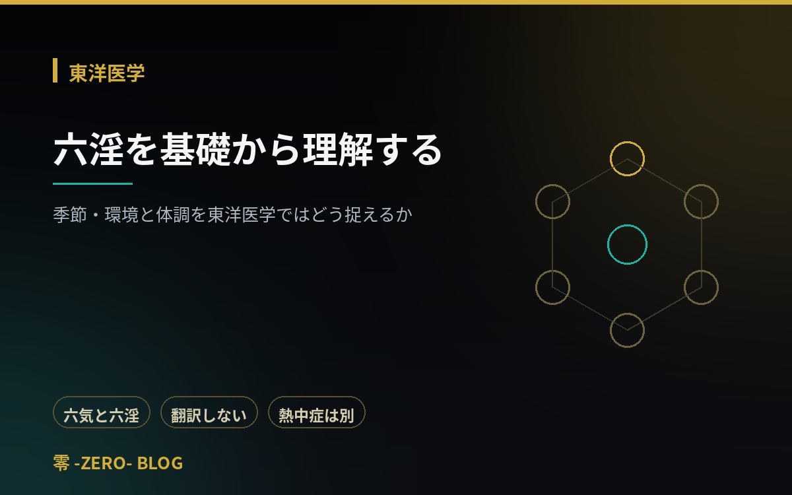

発育発達
2026.09.15
原始反射と姿勢反応を基礎から学ぶ
反射とは何か、原始反射と姿勢反応の違い、発達に伴う変化。検査結果が姿勢・指示の理解・緊張・検者の解釈に左右されること、「残存」という言葉の注意点、現場で確認すべきことまで。
2026年9月に公開された講義記事（全15件）の一覧です。発育発達、東洋医学、女性の健康、安全・鑑別といった領域に加え、腰痛・変形性膝関節症・肘手首手の痛み・足底部痛・経絡経筋の基礎を収録しています。
反射とは何か、原始反射と姿勢反応の違い、発達に伴う変化。検査結果が姿勢・指示の理解・緊張・検者の解釈に左右されること、「残存」という言葉の注意点、現場で確認すべきことまで。

頭部体幹のコントロール・支持・重心移動という三つの土台から運動発達を理解します。WHOが示す達成時期の幅、月齢の目安が診断の境界ではないこと、環境を整えるという視点。

成長軟骨と骨端核という構造上の特徴、オスグッド病・シーバー病・腰椎分離症の違い、「いつから・どこが・何をすると・どれくらい・翌日は」という問診の型と受診の目安。

足部アーチと下肢アライメントの発達、柔軟性のある扁平足と硬さを伴う状態の違い、矯正を断定しない理由。判断の軸は見た目ではなく痛み・左右差・進行・機能への影響です。

外因と六淫、風・寒・暑・湿・燥・火それぞれの伝統的な特徴、六気との関係。「湿＝むくみ」のように現代医学の用語と一対一に対応させてはいけない理由と、熱中症への対応。

舌質や舌苔などの基本用語、一般的な脈拍観察との違い、観察結果に影響する条件。再現性と診断精度の区別、顧客への説明で避けたい表現と適切な表現の比較。

虚・実・補・瀉の伝統的な意味、虚実が何についての不足・過剰を捉える概念か。体格や性格で判断しない理由、補瀉と現代の運動負荷・回復管理が別のものである線引き。

閉経・更年期・閉経移行期の基本用語、ホルモン変動と身体の変化。運動の健康上の利点と更年期症状への効果を区別する理由、体調の波を前提にした調整と受診の目安。

訴えの多様性と、表現だけで原因は決まらないこと。発症時期・持続時間・誘因・随伴症状という四つの軸、頸性めまいと判断しない理由、中止・救急対応・受診相談の区別。

病名だけで運動の可否を決めない理由。安定性・治療内容・合併症・主治医の指示・本人の目標という五つの軸、疾患ごとの確認事項、服薬に踏み込まない原則と中止基準。

腰痛を一つの原因で説明できない理由、大まかな分類の考え方、画像所見と痛みが一致しないという基礎、長期安静を勧めない運動の原則まで。東洋医学が腰をどう見てきたかの入口も収録。

軟骨だけの問題として考えない理由、画像上の変形と痛みが一致しないこと、安静だけでは解決しにくい理由、運動療法の位置づけ、「走ると膝が壊れる」と単純化できない理由を整理します。

上肢の痛みを筋・腱／関節／神経に大まかに分ける視点、痛む場所と原因部位が一致しないことがある理由、しびれへの対応、完全安静と無理な反復の両極端を避ける負荷管理まで。

踵・土踏まず・前足部で考えることが異なる理由、踵骨棘と痛みの関係、「自然に治る」という説明の注意点、裸足を一律に勧めない視点、負荷と接地条件の見直し方を解説します。

経絡と経筋の違い、筋肉・筋膜・神経・血管と同一視しない理由、「存在するか」だけでは臨床的価値を整理できない理由、観察や仮説形成に使うための原則を整理します。